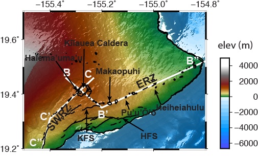
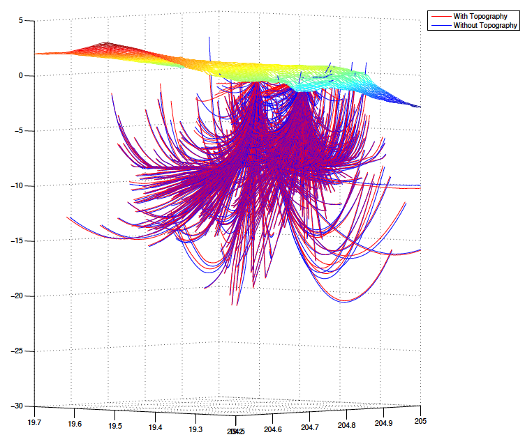
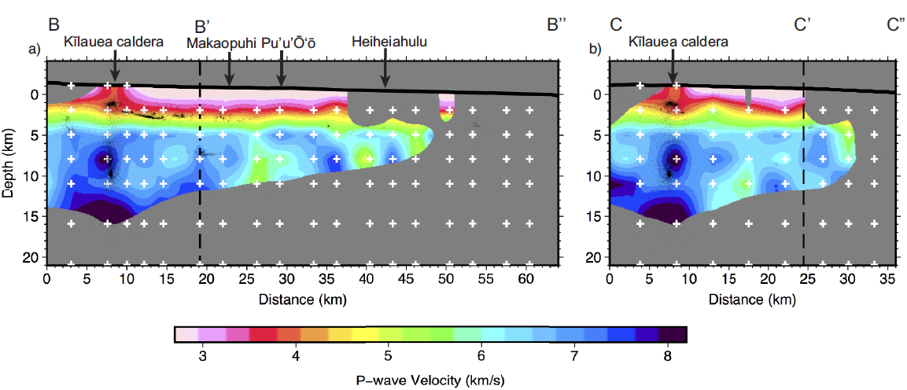

This software is used for 3D local earthquake tomography.
Local earthquakes usually refer to the earthquakes which have a ~10s to ~100s km epicenter distances. Local earthquake tomography uses the seismic data of the local earthquakes to model the subsurface structure of the earth. This new algorithm integrates the Digital Elevation Model (DEM) data into the model build-up and improves the accuracy of the subsurface structure of the earth.
It contains the following features:
1. Inputs are P- and S-wave phase data and elevation data.
2. 3D ray tracing by using Fast March method.
3. Simultaneously inverting the velocity model and earthquake locations and origin time.
4. Outputs are subsurface velocity model of the earth.
An application of the LETFT.
This application uses the local earthquake data at the Hawaii island and models the seismic velocity structures of the south-east part of the Hawaii island.
The map of the south-east part of the Hawaii island.

3D ray paths of the seismic waves.
The ray paths connect the hypocenter of the earthquakes and the seismic stations. They indicate the paths that the seismic waves travel from the hypocenter of the earthquakes to the seismic stations.

Vertical slices of the P-wave velocity model.
The the slices are along the white lines on the previous map.
